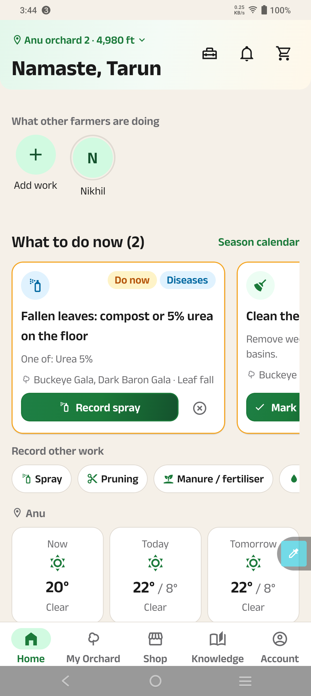
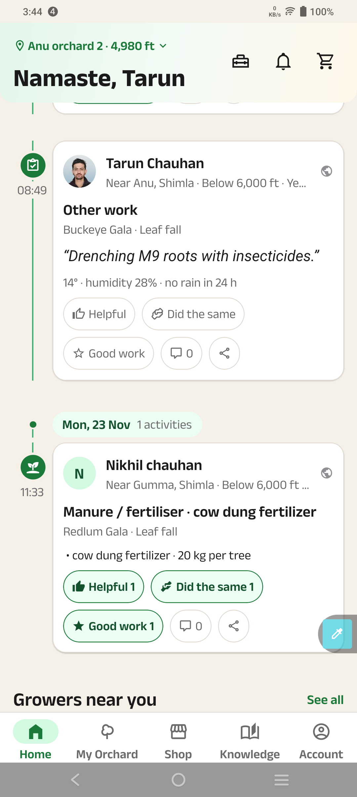

N
Nikhil chauhan
Near Gumma, Shimla · yesterday 20:11
Manure / fertiliser
Redlum Gala · Leaf fall · 9° · humidity 44% · no rain in 24 h
👍 1↻ 1☆💬 0↗
Same data, same features. Today a grower's "today" is spread over four parts of Home (jobs, weather boxes, the green season card, the spray lines), and their own orchard comes after other people's stories. The new Home leads with one "Today" tile that answers the first three questions (what stage, what weather, what to do) and puts the rest in smaller tiles under it. It also uses the flat rules from the last change.


